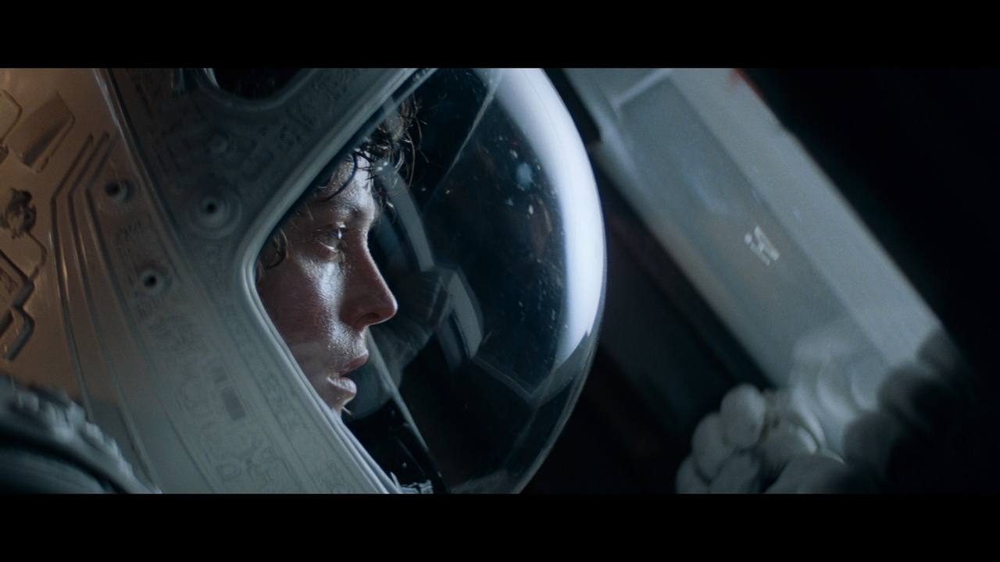
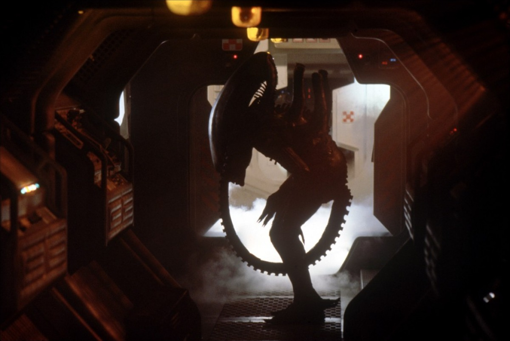
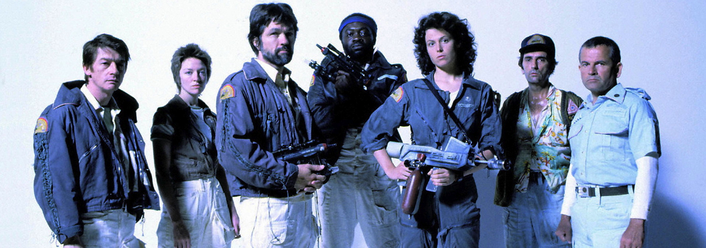
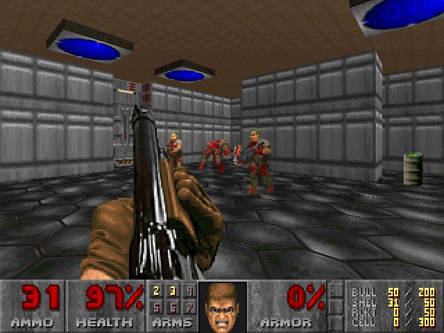
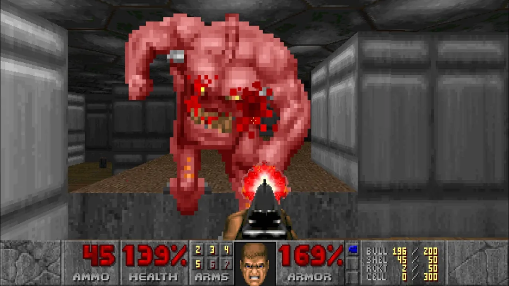
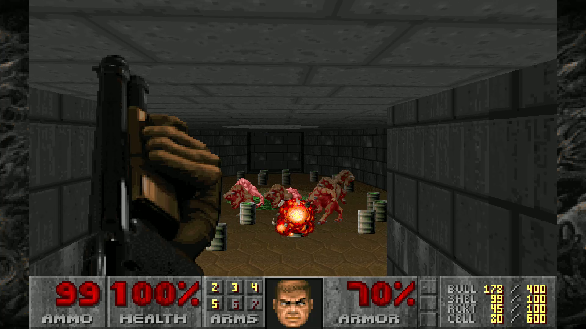

Alien: El octavo pasajero (1979), dirigida por Ridley Scott, es un clásico del cine de ciencia ficción y terror. La historia sigue a la tripulación de la nave Nostromo, que responde a una señal de auxilio en un planeta desconocido. Allí, descubren una forma de vida letal que se infiltra en su nave. A medida que el alienígena crece y ataca uno por uno, la protagonista, Ellen Ripley (Sigourney Weaver), debe luchar por su supervivencia. La película es conocida por su atmósfera claustrofóbica, su innovador diseño de criatura creado por H.R. Giger y su impacto duradero en el género.



Doom (1993) es un icónico videojuego de disparos en primera persona desarrollado por id Software. El jugador asume el papel de un marine espacial que debe abrirse paso a través de hordas de demonios y criaturas infernales en una base de Marte, después de que un experimento de teletransportación sale mal. Con su acción frenética, diseño de niveles innovador y una atmósfera intensa, Doom revolucionó el género FPS e influyó en innumerables juegos posteriores. Su legado sigue vivo con secuelas y remakes modernos.

